4 Diferencijalna ekspresija
import pysam
from scipy import stats
# import matplotlib.pyplot as plt
import glob
import os
import pandas as pd
import numpy as npdef read_count(gene, bamfile):
"""
Compute the number of reads contained in a bamfile that overlap
a given interval
"""
bam_iter = bamfile.fetch(gene[0], gene[1], gene[2])
pysam_gene_count = 0
for x in bam_iter:
pysam_gene_count += 1
return pysam_gene_count## ['/opt/aligned/sample_02_accepted_hits.bam', '/opt/aligned/sample_05_accepted_hits.bam', '/opt/aligned/sample_03_accepted_hits.bam', '/opt/aligned/sample_06_accepted_hits.bam', '/opt/aligned/sample_10_accepted_hits.bam', '/opt/aligned/sample_07_accepted_hits.bam', '/opt/aligned/sample_09_accepted_hits.bam', '/opt/aligned/sample_08_accepted_hits.bam', '/opt/aligned/sample_04_accepted_hits.bam', '/opt/aligned/sample_01_accepted_hits.bam']counts = []
samples = []
for path in paths:
sname = os.path.basename(path).replace('_accepted_hits.bam', '')
bamfile = pysam.AlignmentFile(path)
gene_counts={}
with open('/opt/gencode.v27.chr20.bed', 'r') as f:
for line in f:
tokens = line.split('\t')
current_gene = (tokens[0], int(tokens[1]), int(tokens[2]))
count = read_count(current_gene, bamfile)
gene_counts.update({tokens[3].rstrip() : count})
counts.append(gene_counts)
samples.append(sname)## sample_01 sample_02 sample_03 ... sample_08 sample_09 sample_10
## DEFB125 1016 465 1146 ... 1260 285 426
## DEFB126 559 223 555 ... 749 132 240
## DEFB127 419 145 527 ... 720 114 218
## DEFB128 368 143 458 ... 457 87 138
## DEFB129 395 188 573 ... 730 144 186
## DEFB132 3381 1522 4193 ... 2012 516 711
## AL034548.1 1218 572 1554 ... 3932 889 1037
## C20orf96 1035 385 1384 ... 1815 295 403
## ZCCHC3 2748 1150 2804 ... 3683 814 1023
## NRSN2-AS1 4344 1921 5404 ... 5986 1337 1737
##
## [10 rows x 10 columns]## (1357, 10)## /home/rstudio/.local/share/r-miniconda/envs/compbio/bin/python:1: RuntimeWarning: divide by zero encountered in log## (1347, 10)4.1 Diferencijalna Eskpresija
- Gen ili transkript nazivamo diferencijalno ekspresovanim ako je uocena statisticki znacajna promena u ekspresiji izmedju neke dve grupe uzoraka koje posmatramo.
- Otkrivanje diferencijalno ekspresovanih gena je cesto cilj statisticke analize RNK sekvenciranih podataka.
4.2 Between-sample normalization
- The general point of between-sample normalization (BSN) is to be able to compare expression features (genes, transcripts) ACROSS experiments. This is not to be confused with within-sample normalization methods (comparing different features within a single sample).
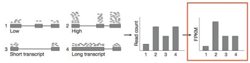
- Most BSN methods address two issues :
- Variable sequencing depth (the total number of reads sequenced) between experiments.
- Finding a “control set” of expression features which should have relatively similar expression patterns across experiments (e.g. genes that are not differentially expressed) to serve as a baseline.
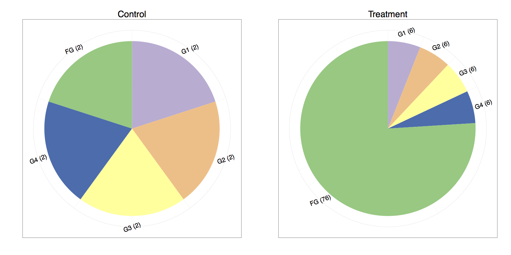 Harold Pimentel: In RNA-Seq, 2 != 2: Between-sample normalization
- One way to do the total count normalization would be to divide by the total counts :
| Gene | Control Counts | Treatment Counts | Control Normalized | Treatment Normalized |
|---|---|---|---|---|
| G1 | 2.00 | 6.00 | 0.20 | 0.06 |
| G2 | 2.00 | 6.00 | 0.20 | 0.06 |
| G3 | 2.00 | 6.00 | 0.20 | 0.06 |
| G4 | 2.00 | 6.00 | 0.20 | 0.06 |
| FG | 2.00 | 76.00 | 0.20 | 0.76 |
If one compares the control and treatment proportions, it seems that every gene is differentially expressed. We are typically under the assumption that the majority of the genes do not change in expression. Under that assumption, it is much more plausible that genes one through four remain equally expressed, whereas “funky gene” (FG) is the only differentially expressed gene.
We might consider normalizing by the sum of the total counts while omitting the last gene since its highly overexpressed and is throwing off the normalization :
| Gene | Control Counts | Treatment Counts | Control Normalized | Treatment Normalized |
|---|---|---|---|---|
| G1 | 2.00 | 6.00 | 0.25 | 0.25 |
| G2 | 2.00 | 6.00 | 0.25 | 0.25 |
| G3 | 2.00 | 6.00 | 0.25 | 0.25 |
| G4 | 2.00 | 6.00 | 0.25 | 0.25 |
| FG | 2.00 | 76.00 | 0.25 | 3.17 |
- Between sample normalization procedures estimate sample-specific normalization factors that are used to rescale the observed counts.
Using these normalization methods, the sum of the normalized counts across all genes are therefore not necessarily equal between samples (as it would be if only the library sizes were used for normalization), but the goal is instead to make the normalized counts for non-differentially expressed genes similar between the samples.
Popular examples of these normalization procedures are TMM (trimmed mean of M-values) and DESeq. These two methods perform similarly and are both based on an assumption that most genes are equivalently expressed in the samples, and that the differentially expressed genes are divided more or less equally between up- and downregulation.
With DESeq sample-specific normalization constants are estimated with the median-of-ratios method:
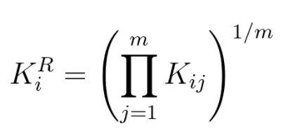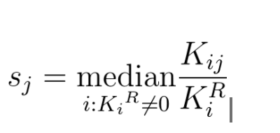
- Let’s try estimating sample specific normalization factor for the two dummy samples from the example. We first calculate the geometric means for each gene:
| Gene | Control Counts | Treatment Counts | KiR |
|---|---|---|---|
| G1 | 2.00 | 6.00 | 3.464 |
| G2 | 2.00 | 6.00 | 3.464 |
| G3 | 2.00 | 6.00 | 3.464 |
| G4 | 2.00 | 6.00 | 3.464 |
| FG | 2.00 | 76.00 | 12.329 |
- Next we divide each count with the geometric mean expression for that gene:
| Gene | Control Counts/KiR | Treatment Counts/KiR |
|---|---|---|
| G1 | 0.57735 | 1.73205 |
| G2 | 0.57735 | 1.73205 |
| G3 | 0.57735 | 1.73205 |
| G4 | 0.57735 | 1.73205 |
| FG | 0.16222 | 6.16441 |
- It is obvious that sample specific normalization factors are 0.57735 and 1.73205 (sample medians).
- Finally we divide each sample by its normalization factor:
| Gene | Control Normalized | Treatment Normalized |
|---|---|---|
| G1 | 3.4641 | 3.4641 |
| G2 | 3.4641 | 3.4641 |
| G3 | 3.4641 | 3.4641 |
| G4 | 3.4641 | 3.4641 |
| FG | 3.4641 | 43.87864 |
## sample_01 sample_02 sample_03 ... sample_08 sample_09 sample_10
## DEFB125 1.351510 0.618555 1.524440 ... 1.676086 0.379115 0.566677
## DEFB126 1.411339 0.563021 1.401240 ... 1.891043 0.333268 0.605942
## DEFB127 1.268995 0.439151 1.596087 ... 2.180612 0.345264 0.660241
## DEFB128 1.450690 0.563719 1.805478 ... 1.801536 0.342962 0.544009
## DEFB129 1.049116 0.499326 1.521882 ... 1.938873 0.382463 0.494014
## DEFB132 1.840957 0.828730 2.283092 ... 1.095536 0.280962 0.387140
## AL034548.1 0.854659 0.401367 1.090427 ... 2.759048 0.623803 0.727653
## C20orf96 1.276008 0.474650 1.706276 ... 2.237638 0.363693 0.496842
## ZCCHC3 1.376184 0.575914 1.404228 ... 1.844427 0.407647 0.512313
## NRSN2-AS1 1.335328 0.590508 1.661168 ... 1.840072 0.410988 0.533947
##
## [10 rows x 10 columns]Normalized, this is how our simulated dataset looks like:
## sample_01 sample_02 ... sample_09 sample_10
## DEFB125 799.307029 844.137999 ... 708.873105 816.735707
## DEFB126 439.776210 404.823169 ... 328.320175 460.132793
## DEFB127 329.635478 263.225828 ... 283.549242 417.953953
## DEFB128 289.512782 259.595127 ... 216.392842 264.576356
## DEFB129 310.754209 341.285901 ... 358.167463 356.602914
## DEFB132 2659.898687 2762.963514 ... 1283.433410 1363.143399
## AL034548.1 958.224372 1038.380506 ... 2211.186631 1988.157109
## C20orf96 814.254700 698.909956 ... 733.745845 772.639648
## ZCCHC3 2161.905233 2087.653115 ... 2024.641077 1961.316029
## NRSN2-AS1 3417.509582 3487.288378 ... 3325.485406 3330.211088
##
## [10 rows x 10 columns]4.3 Exploratory analysis
Data quality assessment and quality control (i.e. the removal of insufficiently good data) are essential steps of any data analysis. These steps should typically be performed very early in the analysis of a new data set, preceding or in parallel to the differential expression testing.
The dataset we are investigating is simulated, but let us pretend that samples 6 through 10 are coming from the “treated” population and that samples 1 through 5 are “untreated” or “control” samples.
A useful initial step in an RNA-seq analysis is often to assess overall similarity between samples:
Which samples are similar to each other, which are different?
Does this fit to the expectation from the experiment’s design?
What are the major sources of variation in the dataset?To explore the similarity of our samples, we will be performing sample-level QC using Principal Component Analysis (PCA) and hierarchical clustering methods. Our sample-level QC allows us to see how well our replicates cluster together, as well as, observe whether our experimental condition represents the major source of variation in the data. Performing sample-level QC can also identify any sample outliers, which may need to be explored further to determine whether they need to be removed prior to DE analysis.
from sklearn.decomposition import PCA
from sklearn.preprocessing import StandardScaler
pca = PCA(n_components=2)
principalComponents = pca.fit_transform(normdf.T)
principalDf = pd.DataFrame(data = principalComponents
, columns = ['principal component 1', 'principal component 2'])
categories = np.array(["untreated", "treated"])
finalDf = pd.concat([principalDf, pd.DataFrame(np.repeat(categories, [5, 5], axis=0), columns=['condition'])], axis = 1)
finalDf## principal component 1 principal component 2 condition
## 0 7253.669019 -1133.085852 untreated
## 1 6777.834829 -351.825929 untreated
## 2 6777.584161 1550.295036 untreated
## 3 6891.705861 -334.630787 untreated
## 4 7100.443338 351.964060 untreated
## 5 -7020.208240 2833.669670 treated
## 6 -7027.034271 -2662.133319 treated
## 7 -7052.228614 957.489013 treated
## 8 -6578.866744 -1450.586265 treated
## 9 -7122.899341 238.844374 treated## principal component 1 principal component 2 condition
## 1 7253.669 -1133.0859 untreated
## 2 6777.835 -351.8259 untreated
## 3 6777.584 1550.2950 untreated
## 4 6891.706 -334.6308 untreated
## 5 7100.443 351.9641 untreated
## 6 -7020.208 2833.6697 treated
## 7 -7027.034 -2662.1333 treated
## 8 -7052.229 957.4890 treated
## 9 -6578.867 -1450.5863 treated
## 10 -7122.899 238.8444 treatedggplot(pcaDF, aes(x=`principal component 1`, y=`principal component 2`, color = condition)) +
geom_point()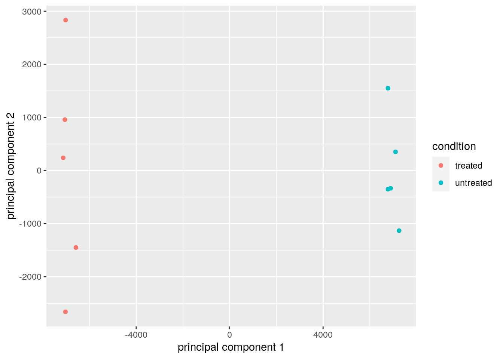
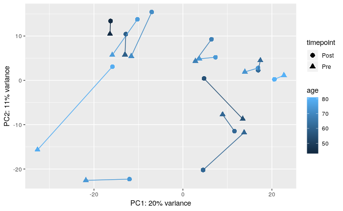
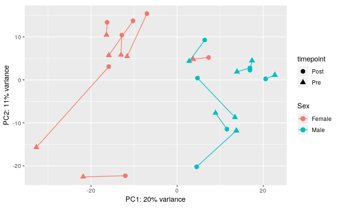
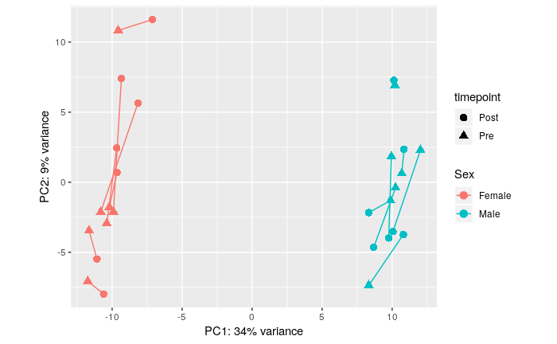
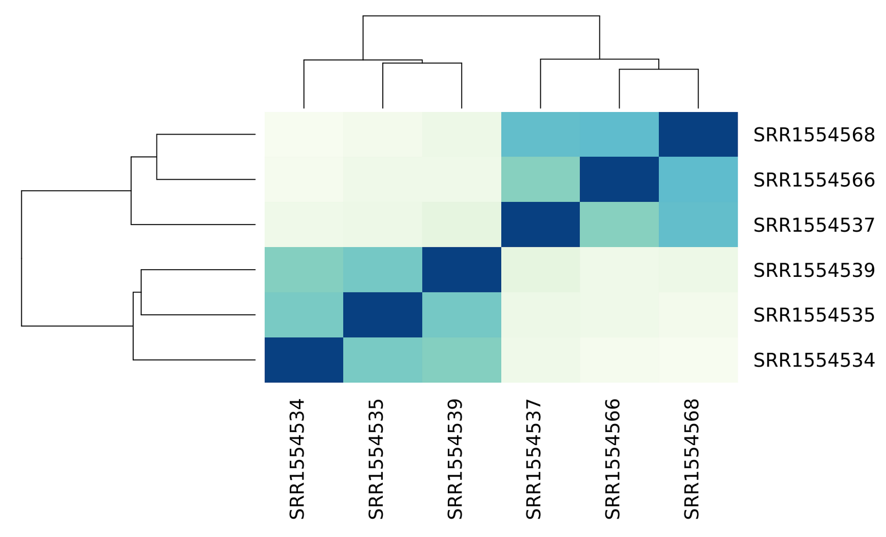
4.4 Intro to statistical inference
For each gene, we are interested in differences in mean expression between the two sample groups.
import seaborn as sns
aux = {"norm" : normdf.loc['AL031055.1'], "group" : np.repeat(categories, [5, 5], axis=0)}
df = pd.DataFrame(data=aux)
sns.stripplot(x="group", y="norm", data=df, jitter=True).set_title('AL031055.1')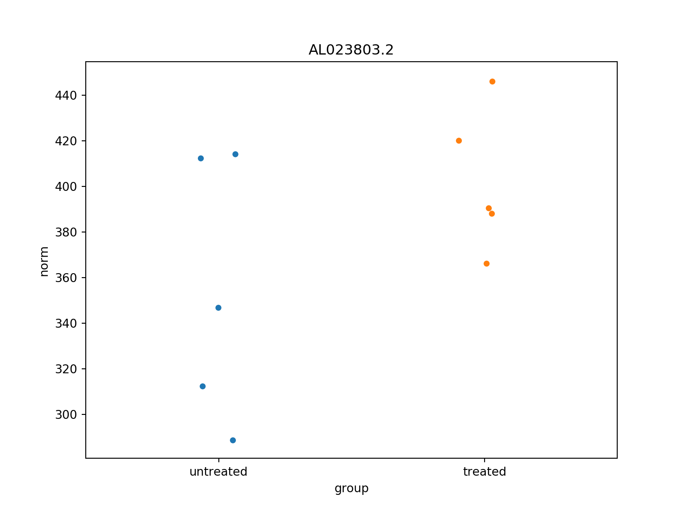
aux = {"norm" : normdf.loc['AL023803.2'], "group" : np.repeat(categories, [5, 5], axis=0)}
df = pd.DataFrame(data=aux)
sns.stripplot(x="group", y="norm", data=df, jitter=True).set_title('AL023803.2')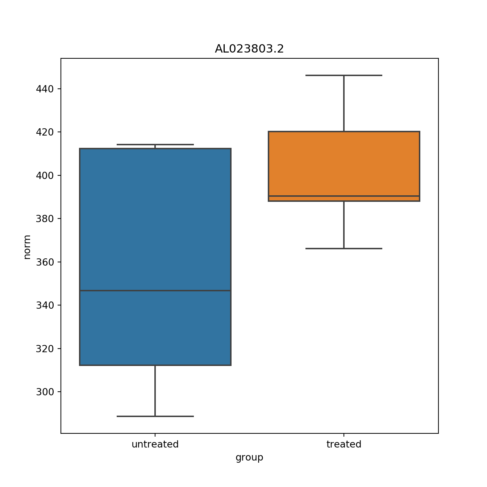
cMean = normdf.loc['AL023803.2'][0:5].mean()
tMean = normdf.loc['AL023803.2'][5:10].mean()
print(cMean)## 354.8722544056803## 402.20746388364734## 47.335209477967055So the expression level for AL023803.2 in treated samples is about 10% higher. But these averages are random variables. They can take many values.
If we repeat the experiment, by sequencing samples from a new batch of patients (or even resequencing the same ones) we get different means. Every time we repeat this experiment, we get a different value of mean difference.
When comparing measured values we need to be skeptical. How do we know that this difference is due to the treatment? What happens if compare two sets of untreated samples? Will we see a difference this big? Statisticians refer to this scenario as the null hypothesis. The name “null” is used to remind us that we are acting as skeptics: we give credence to the possibility that there is no difference.
So what do we do?
Because we do not have access to entire populations of untreated and treated samples, we cannot confidently say just by comparing the mean expression values that a gene is differentialy expressed.
We can perform a simple permutation test. Permutation tests take advantage of the fact that if we randomly shuffle the treated and untreated labels for the 10 measurements that we have - then the null is true. So we shuffle the labels, calculate the mean difference and assume that the ensuing distribution approximates the null distribution. Here is how we generate a null distribution by shuffling the data 1,000 times:
normexp = normdf.loc['AL023803.2']
np.random.seed(6)
means =[]
for i in range(1000) :
aux = np.random.permutation(normexp)
cmean = aux[0:5].mean()
tmean = aux[5:10].mean()
means.append(tmean-cmean)betaHat <- reticulate::py$diff
b1 <- unlist(reticulate::py$means)
hist(b1, breaks = 50)
abline(v=c(betaHat, -betaHat), col = "red")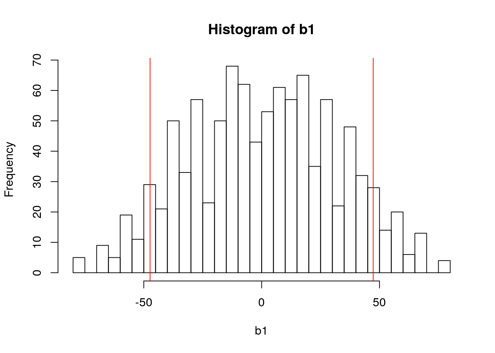
## [1] 0.1358641# plt.hist(means, bins = 20)
# plt.axvline(diff, color='k', linestyle='dashed', linewidth=2)
# plt.axvline(-diff, color='k', linestyle='dashed', linewidth=2)
# plt.show()## 0.135- Null hypothesis: there is no significant difference between specified populations, any observed difference being due to sampling or experimental error.
- The p-value is defined as the probability of obtaining a result equal to or “more extreme” than what was actually observed, when the null hypothesis is true.
- The alternative hypothesis is considered true if the statistic observed would be an unlikely realization of the null hypothesis according to the p-value.
4.5 Central Limit Theorem
CLT: When the sample size is large, the average \(\bar{Y}\) of a random sample follows a normal distribution centered at the population average \(\mu_{Y}\) and with standard deviation equal to the population standard deviation \(\sigma_{Y}\), divided by the square root of the sample size \(N\).
We refer to the standard deviation of the distribution of a random variable as the random variable’s standard error.
https://rajeshrinet.github.io/blog/2014/central-limit-theorem/
Population mean and variance (deviation squred) are parameters defined as:
\[\mu_{Y} = \frac{1}{n}\sum_{i=1}^{n}y_{i}\] \[\sigma_{Y}^2 = \frac{1}{n}\sum_{i=1}^{n}(y_{i}-\mu_{Y})^{2}\]
where \(n\) is the number of elements in population.
Normal distribution \(N(\mu, \sigma)\) is defined with the density function:
\[f(x)=\frac{1}{\sqrt{2\pi\sigma^{2}}}e^{-\frac{\left (x-\mu_{X} \right )^{2}}{2\sigma^{2}}}\]
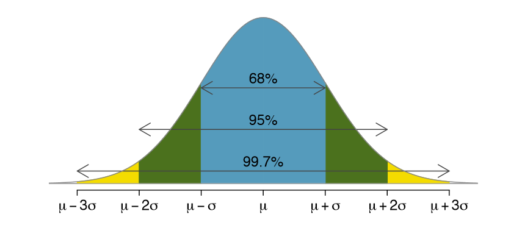
If we subtract a constant from a random variable, the mean of the new random variable shifts by that constant. Mathematically, if \(X\) is a random variable with mean \(\mu\) and \(a\) is a constant, the mean of \(X − a\) is \(\mu − a\). A similarly intuitive result holds for multiplication and the standard deviation (SD). If \(X\) is a random variable with mean \(\mu\) and SD \(\sigma\), and \(a\) is a constant, then the mean and SD of \(aX\) are \(a\mu\) and \(| a | \sigma\) respectively.
Knowing this, the CLT implies that if we take many samples of size \(N\), then the quantity:
\[\frac{\bar{Y}-\mu_{Y}}{\sigma_{Y}/\sqrt{N}}\]
is approximated with a normal distribution centered at 0 and with standard deviation 1.
If \(X\) and \(Y\) are two random variables independent of each other, then the variance of \(X + Y\) is the sum of the variances \(\sigma_{X}^{2} + \sigma_{Y}^{2}\). The sum (or the difference) of normal variables is again normal. Under the null hypothesis (when the mean difference is 0), the ratio:
\[\frac{\bar{Y}-\bar{X}}{\sqrt{\frac{\sigma_{Y}^{2}}{N}+\frac{\sigma_{X}^{2}}{M}}}\]
is approximated by a normal distribution centered at 0 and standard deviation 1. Using this approximation makes computing p-values simple because we know the proportion of the distribution under any value. For example, only 5% of these values are larger than 2 (in absolute value).
However, we can’t claim victory just yet because we don’t know the population standard deviations: \(\sigma_{X}\) and \(\sigma_{Y}\). These are unknown population parameters, but we can get around this by using the sample standard deviations, call them \(s_{X}\) and \(s_{Y}\). These are defined as:
\[s_{X}^2 = \frac{1}{M-1}\sum_{i=1}^{M}(X_{i}-\bar{X})^{2}\] \[s_{Y}^2 = \frac{1}{N-1}\sum_{i=1}^{N}(Y_{i}-\bar{Y})^{2}\]
\(M − 1\), \(N − 1\): the degrees of freedom.
So we can redefine our ratio as:
\[\frac{\bar{Y}-\bar{X}}{\sqrt{\frac{s_{Y}^{2}}{N}+\frac{s_{X}^{2}}{M}}}\]
The CLT tells us that when \(M\) and \(N\) are large, this random variable is normally distributed with mean 0 and SD 1.
4.6 The t-distribution
The CLT relies on large samples, what we refer to as asymptotic results. When the CLT does not apply, there is another option that does not rely on asymptotic results. When the original population from which a random variable, say \(Y\), is sampled is normally distributed with mean 0, then we can calculate the distribution of:
\[\sqrt{N}\frac{\bar{Y}-0}{\sigma_{Y}}\]
This is the ratio of two random variables so it is not necessarily normal. The fact that the denominator can be small by chance increases the probability of observing large values. In 1908. William Sealy Gosset, an employee of the Guinness brewing company, deciphered the distribution of this random variable and published a paper under the pseudonym “Student”. The distribution is therefore called Student’s t-distribution.
\[f(t)=\frac{\Gamma(\frac{\nu+1}{2})}{\sqrt{\nu\pi}\Gamma(\frac{\nu}{2})}\left (1+\frac{t^2}{\nu} \right )^{-\frac{\nu+1}{2}}\]
where \(\nu\) is the degrees of freedom.
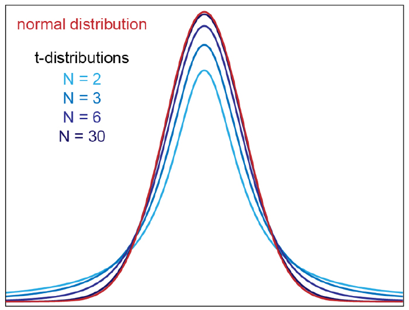
So for small sample sizes we shall be computing that same ratio:
\[\frac{\bar{Y}-\bar{X}}{\sqrt{\frac{s_{Y}^{2}}{N}+\frac{s_{X}^{2}}{M}}}\]
only this time we shall be comparing it to the t-distribution instead of normal. All such tests are usually called Student’s t-tests, though strictly speaking that name should only be used if the variances of the two populations are also assumed to be equal; the form of the test used when this assumption is dropped is sometimes called Welch’s t-test and that’s the one that we’ll be implementing.
def welch_test(a, b):
# pandas.Series.var() returns an unbiased variance estimate, normalized by N-1 by default
var_a = a.var()
var_b = b.var()
Na = len(a)
Nb = len(b)
# std deviation estimate
s = np.sqrt(var_a/Na + var_b/Nb)
# calculate the t-statistics
t = (a.mean() - b.mean())/s
# degrees of freedom - Welch–Satterthwaite equation, yeah it's a bit more complicated than Na + Nb - 2
deg = (((var_a)/Na + (var_b)/Nb)**2)/ ((var_a**2)/(Na**2*(Na-1)) + (var_b**2)/(Nb**2*(Nb-1)))
# p-value after comparison with the t
p = 2*stats.t.sf(np.abs(t), deg)
return (p)
p = [(index, welch_test(row.values[0:5], row.values[5:10])) for index, row in normdf.iterrows()]## (1347, 1)## pval
## gene
## DEFB125 6.449128e-01
## DEFB126 3.094837e-01
## DEFB127 5.164307e-01
## DEFB128 3.106288e-03
## DEFB129 5.639828e-01
## DEFB132 6.687543e-074.7 Multiple testing
- In genomic studies you don’t usually fit just one regression model or calculate just one p-value. You calculate many p-values.
- In our simulated dataset, just from chromosome 20 (which is one of the shortest in human genome) we have 1347 genes.
- If you use the standard cutoff of 0.05 when calling p-value significant, you’ll know that since p-values are uniformly distributed when the null is true, about 1 out of every 20 times you’ll still call that result statistically significant, even when there is no true biological effect.
np.random.seed(6)
pvals =[]
for i in range(20000) :
firstg = np.random.normal(32, 5, 20)
secondg = np.random.normal(32, 5, 20)
pval = welch_test(firstg, secondg)
pvals.append(pval)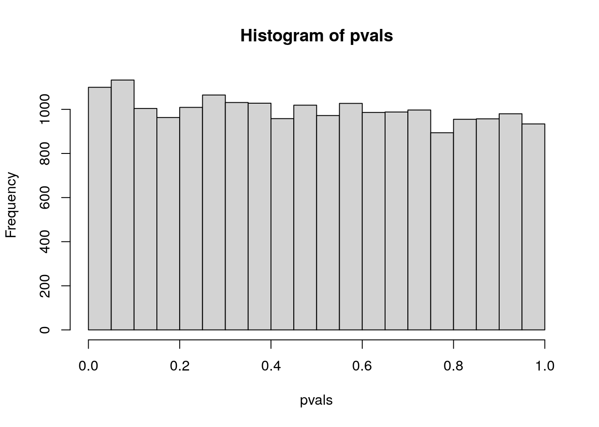
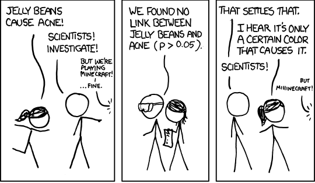
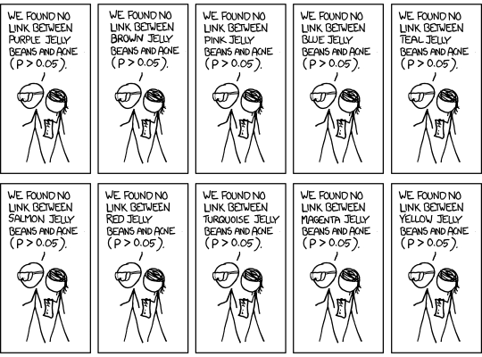
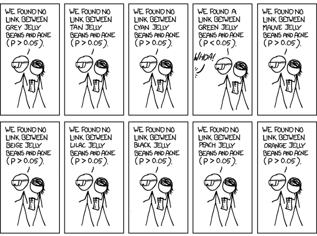
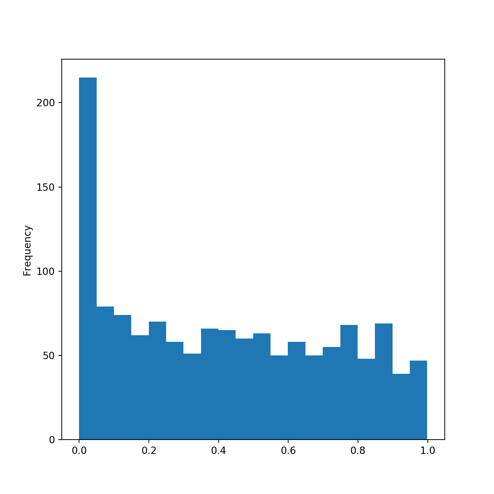
| Called significant | Not called significant | Total | |
|---|---|---|---|
| Null true | \(V\) | \(n_{0} - V\) | \(n_{0}\) |
| Alternative true | \(S\) | \(n_{1} - S\) | \(n_{1}\) |
| Total | \(R\) | \(n - R\) | \(n\) |
- \(V\) represents the number of type I errors (false positives);
- \(n_{1} - S\) represents the number of type II errors (false negatives);
- \(S\) is the number of true positives and \(n_{0} - V\) the number of true negatives.
A multiple testing correction procedure is needed to adjust the statistical confidence measures based on the number of tests performed. Different error rates are defined for this purpose:
- Family wise error rate:
\[FWER = P_{r}\left (V \geq 1 \right ) = 1 - P_{r}\left (V = 0 \right )\]
is the probability of making one or more false discoveries, or type I errors when performing multiple hypotheses tests.
- False discovery rate:
\[FDR=E\left \lfloor \frac{V}{V+S} \right \rfloor\]
is the expected proportion of “discoveries” (rejected null hypotheses) that are false (incorrect rejections).
- Suppose 1200 out of 20,000 genes are found significant at 0.05 level (threshold \(\alpha = 0.05\)).
- No correction: expect 0.05 * 20,000 = 1000 false positives
- False Discovery Rate correction: expect 0.05 * 1200 = 60 false positives
- Family Wise Error Rate correction: expect no false positives (probability of having at least one false positive is ≤ 0.05)
Benjamini-Hochberg correction: the p-values are sorted in increasing order and the i-th p-value is considered significant if it’s less or equal to \(\frac{i\alpha}{n}\).
Bonferroni correction: p-values less or equal to α/n are considered significant.
res = res.sort_values(by=['pval'])
m = res.shape[0]
qval = np.zeros(m)
for i in range(0, m):
qval[i] = (res['pval'][i]*m/(i+1))
res['qval'] = qval
alpha = 0.05
res['de'] = res['qval'] < alphaAfter performing Benjamini-Hochberg (FDR) correction:
## pval qval de
## gene
## FLRT3 9.418961e-10 0.000001 True
## PLCG1-AS1 3.296634e-09 0.000002 True
## RBM39 3.591833e-09 0.000002 True
## TOP1 5.383997e-09 0.000002 True
## RALGAPB 5.399923e-09 0.000001 True
## RTFDC1 7.302393e-08 0.000016 True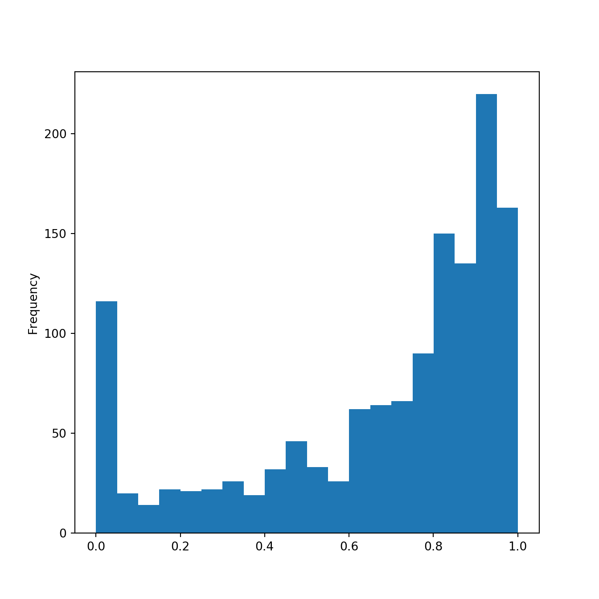